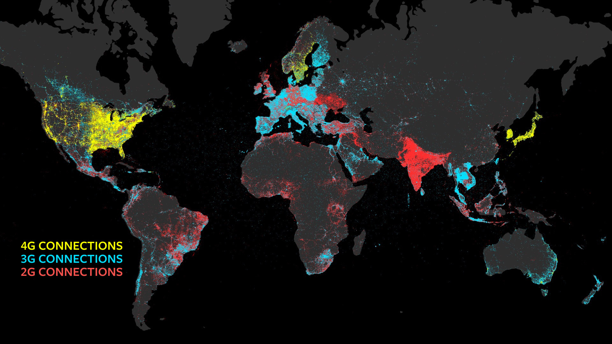
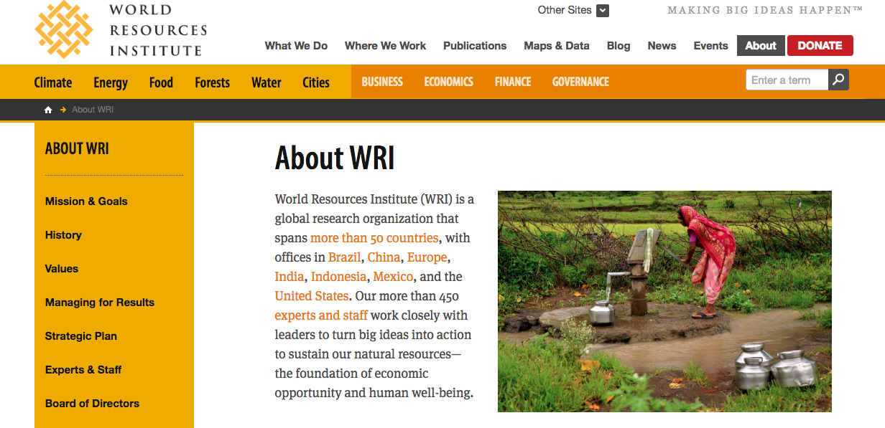

Facebook Solar Powered Drone
This image is what came to mind when I thought of creating an interactive world map of resources. I remembered seeing this image and realizing the impact of seeing how few people the internet was available to and even the differences in available connections. I want to visually plot data in a similar way, but allow users to select what resource they would like to see and then have the map correspond to their selection. Originally, this image is used by Facebook to advertise a solar powered drone that can deliver a connection to the internet for up to 90 days. I liked the idea of trying to make resources more accessible to people and utilizing data visualization as a tool to do so. I have seen several other pictures that show these areas of internet accessibility, but I like this one in particular because it breaks down the areas where 4G, 3G, and 2G connections are available. As for the interface, the image is displayed too small for recognition and the website is very text heavy.
World Resource Institute
I really like the video and color palette the WRI use with their website. Their video has a similar idea of what I would like to do with my map, but presented in a more illustrative way with motion graphics. Although the issues they discuss are the same I would like to address, I think showing some of what they have uncovered on a world map will create an impact to reinforce the video. They do offer several links to maps with specific resources for key areas, but I would like to expand this to a global view. The video presents information in a storytelling form, which progresses case by case. Combining the positive aspects of both of these examples to influence my idea will really help me to narrow down my focus and pinpoint how I would like my project to function.